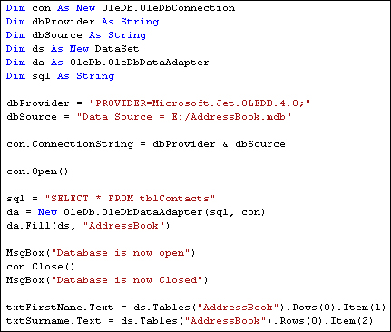
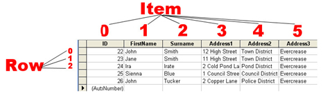

Displaying the Data in the DataSet
Part of an ongoing tutorial.The first part of Databases and VB .NET can be found here:
Coding your own VB .NET database projects
In the previous section, we saw what Data Adaptors and DataSets were. We created a Data Adaptor so that it could fill a DataSet with records from our database. What we want to do now is to display the records on a Form, so that people can see them. So so this:
- Add two textboxes to your form
- Change the Name properties of your textboxes to txtFirstName and txtSurname
- Go back to your code window
- Add the following two lines:
txtFirstName.Text = ds.Tables("AddressBook").Rows(0).Item(1)
txtSurname.Text = ds.Tables("AddressBook").Rows(0).Item(2)
You can add them after the line that closes the connection to the database. Once the DataSet has been filled, a connection to a database can be closed.
Your code should now look like this:

Before the code is explained, run your programme and click the button. You should see "John Smith" displayed in your two textboxes.
So let's examine the code that assigns the data from the DataSet to the textboxes. The first line was this:
txtFirstName.Text = ds.Tables("AddressBook").Rows(0).Item(1)
It's rather a long line! But after the equals sign, you type the name of your DataSet (ds for us). After a full stop, select Tables from the popup list. The Tables property needs something in between round brackets. Quite bizarrely, this is NOT the name of your database table! It's that identifier you used with the Data Adapter Fill. We used the identifier "AddressBook". If we had used "Bacon Sandwich" then we'd put this:
ds.Tables("Bacon Sandwich")
But we didn't, so our code is:
ds.Tables("AddressBook")
Type a full stop and you'll see another list popping up at you. Select Rows
from the list. In between round brackets, you need a number. This is a Row number
from the DataSet. We want the first row, which is row zero in the DataSet:
ds.Tables("AddressBook").Rows( 0 )
Type full stop after Rows(0) and the popup list appears again. To identify a Column from the DataSet, you use Item. In between round brackets, you type which column you want:
ds.Tables("AddressBook").Rows(0).Item( 1 )
In our Access database, column zero is used for an ID field. The FirstName column is the second column in our Access database. Because the Item collection is zero based, this is item 1 in the DataSet.
You can also refer to the column name itself for the Item property, rather than a number. So you can do this:
ds.Tables("AddressBook").Rows(0).Item("FirstName")
ds.Tables("AddressBook").Rows(0).Item("Surname")
If you get the name of the column wrong, then VB throws up an error. But an image might clear things up. The image below shows what the items and rows are in the database.

The image shows which are the Rows and which are the Items in the Access database Table. So the Items go down and the Rows go across.
However, we want to be able to scroll through the table. We want to be able to click a button and see the next record. Or click another button and see the previous record. You can do this by incrementing the Row number. To see the next record, we'd want this:
txtFirstName.Text = ds.Tables("AddressBook").Rows(1).Item(1)
txtSurname.Text = ds.Tables("AddressBook").Rows(1).Item(2)
The record after that would then be:
txtFirstName.Text = ds.Tables("AddressBook").Rows(2).Item(1)
txtSurname.Text = ds.Tables("AddressBook").Rows(2).Item(2)
So by incrementing and decrementing the Row number, you can navigate through the records. Let's see how that's done.